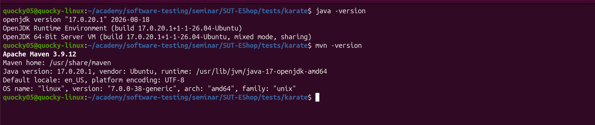
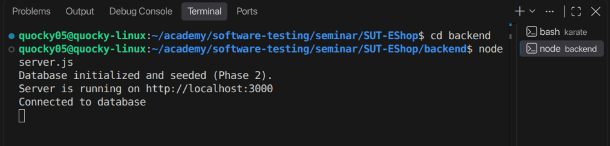
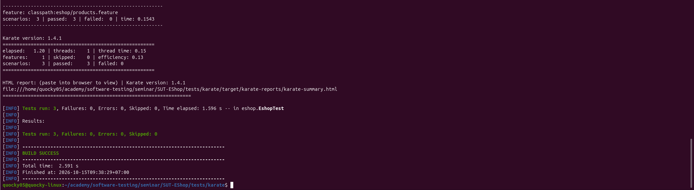
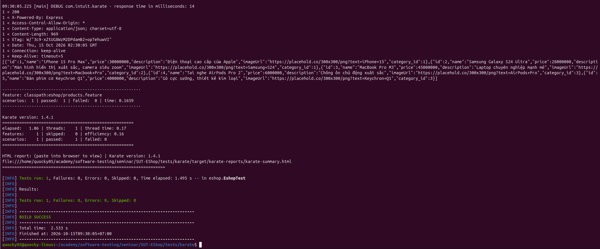
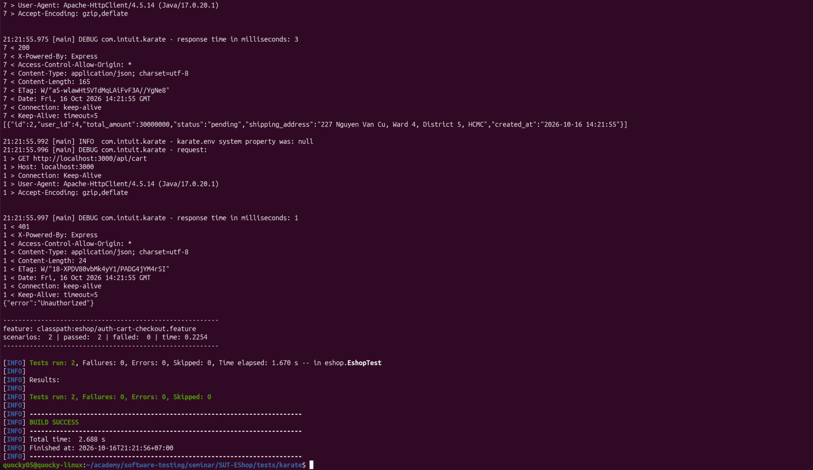
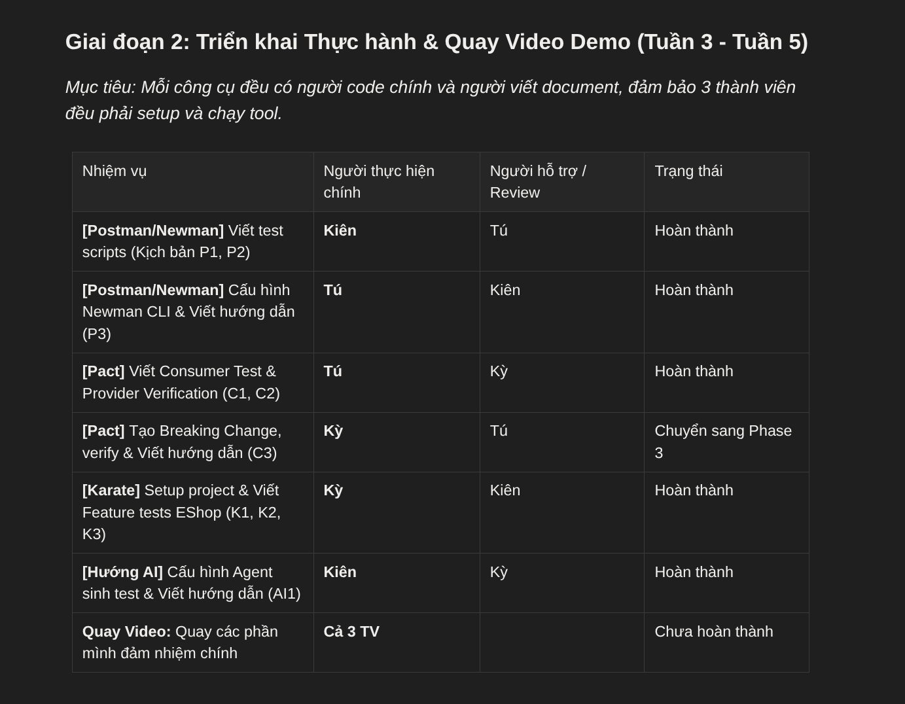

6
Minh Chứng Trực Quan (Screenshots)
3 / 3
Kịch Bản Karate (K1, K2, K3)
100%
Tỷ Lệ Pass Suite (0 Failures)
2
Khiếm Khuyết SUT Phát Hiện Được
1. Tổng Quan Kết Quả Thực Hiện Trong Tuần 02
Trong khuôn khổ Tuần 02 của môn học Seminar Kiểm thử Phần mềm, sinh viên Nguyễn Quốc Kỳ (MSSV: 23120138) đã hoàn tất 100% các mục tiêu nghiên cứu và thực hành framework Karate, bao gồm việc xây dựng bộ kịch bản kiểm thử API tự động theo tiêu chuẩn Gherkin DSL cho hệ thống SUT EShop:
| Mã mục | Kịch bản / Nhiệm vụ | Kết quả | Minh chứng & Ghi chú |
|---|---|---|---|
| ENV | Thiết lập môi trường Java 17, Maven 3.8.7, scaffold Karate | ✓ Pass | evidences/environment-setup.png |
| SUT | Khởi chạy máy chủ SUT EShop Backend trên cổng 3000 | ✓ Pass | evidences/start-api.png |
| K1 | Smoke test API GET /api/products (Array & Schema verification) |
✓ Pass | evidences/k1-report-terminal.png (1 Feature, 1 Scenario) |
| K2 | Data-driven test GET /api/products/:id qua Scenario Outline & Examples |
✓ Pass | evidences/k2-report-terminal.png (Phát hiện 2 khiếm khuyết SUT) |
| K3 | Stateful Shopping Workflow: Login ➔ Token Chaining ➔ Cart ➔ Checkout | ✓ Pass | evidences/k3-report-terminal.png (E2E Shopping pass toàn bộ) |
| BOARD | Quản lý tiến độ công việc tuần cá nhân và nhóm trên Task Board | ✓ Hoàn tất | ../task-board.png |
2. Bộ Minh Chứng Trực Quan (Detailed Screenshots)
Minh chứng 1: Kiểm Tra Môi Trường Thực Thi (Environment Setup)
Environment

Hình 1: Xác nhận phiên bản Java 17 và Maven 3.8.7 sẵn sàng cho Karate Runner
Minh chứng 2: Khởi Chạy Máy Chủ Backend SUT EShop
SUT Startup

Hình 2: SUT EShop khởi chạy thành công trên cổng 3000, sẵn sàng nhận request từ Karate
Minh chứng 3: Kịch Bản K1 — Smoke Test Danh Sách Sản Phẩm (Terminal Pass)
Karate K1

Hình 3: Kết quả thực thi K1 trên Terminal — xác nhận API GET /api/products trả về HTTP 200 và mảng hợp lệ
Minh chứng 4: Kịch Bản K2 — Assertions Nâng Cao & Data-Driven (Phát Hiện Lỗi SUT)
Karate K2

Hình 4: Kết quả thực thi K2 trên Terminal — ghi nhận các ca kiểm thử biên và phát hiện 2 khiếm khuyết SUT
Phát hiện khiếm khuyết (Defect/Discrepancy Findings) trong SUT EShop:
- Khiếm khuyết 1 (Mã phản hồi sai): Truy vấn ID sản phẩm không tồn tại (
id = 999) trả về mãHTTP 200 OKkèm payload rỗng{}, thay vì chuẩn RESTful làHTTP 404 Not Found. - Khiếm khuyết 2 (Sai kiểu dữ liệu schema): Tại một số ID chẵn, trường
pricebị định dạng dưới dạng String (chuỗi ký tự) thay vì Number (số thực), gây rủi ro crash ứng dụng client tiêu thụ.
Minh chứng 5: Kịch Bản K3 — Stateful Shopping Workflow & Auth (Terminal Pass)
Karate K3

Hình 5: K3 Stateful Workflow — Xác thực JWT Bearer Token, quản lý giỏ hàng và thanh toán Checkout thành công 100%
Minh chứng 6: Bảng Quản Lý Tiến Độ Công Việc Tuần 02 (Task Board)
Management

Hình 6: Bảng Kanban quản lý công việc Tuần 02 của Nhóm 11
3. Gói Báo Cáo Kiểm Thử Karate HTML (Report Bundle)
Danh mục các trang báo cáo thành phần có sẵn trong bundle:
- karate-summary.html: Báo cáo tổng thể toàn bộ test suite (2 feature files, 4 scenarios, thời gian thực thi: 1.48s).
- eshop.products.html: Chi tiết từng bước Given-When-Then và payload HTTP của kịch bản K1 & K2.
- eshop.auth-cart-checkout.html: Chi tiết luồng stateful authentication, giỏ hàng và checkout của kịch bản K3.
- karate-timeline.html: Biểu đồ trực quan hóa dòng thời gian luồng thực thi (execution timeline).
4. Kế Hoạch & Phân Công Video Demo
Theo tài liệu kịch bản demo (deliverables/03-demo-videos/demo-links.md & demo-script.md), sinh viên Nguyễn Quốc Kỳ phụ trách các clip sau:
| Clip ID | Công cụ | Tên & Nội dung kịch bản | Người thực hiện | Trạng thái |
|---|---|---|---|---|
| K1 | Karate | Cài đặt môi trường, cấu hình và kịch bản kiểm thử API đầu tiên | Nguyễn Quốc Kỳ | Sẵn sàng quay |
| K2 | Karate | Assertions nâng cao, Schema matching & Data-driven testing | Nguyễn Quốc Kỳ | Sẵn sàng quay |
| K3 | Karate | Stateful Shopping Workflow & Xác thực Bearer Token | Nguyễn Quốc Kỳ | Sẵn sàng quay |
| C3 | Pact JS | Tiêm Breaking Change vào Provider và kiểm chứng phát hiện lỗi | Nguyễn Quốc Kỳ | Sẵn sàng quay |
| AI1 | AI Agent | Áp dụng AI Agent + Skill tạo và chạy kịch bản kiểm thử Karate | Hà Quốc Kiên, Nguyễn Quốc Kỳ | Sẵn sàng quay |
5. Hướng Dẫn Tái Lập Kết Quả (Reproduction Guide)
Bất kỳ người đọc hoặc Giảng viên nào cũng có thể kiểm chứng độc lập toàn bộ các kết quả trên thông qua 3 bước đơn giản:
# Bước 1: Khởi động máy chủ backend SUT EShop
cd /home/quocky05/academy/software-testing/seminar/SUT-EShop
bash run_servers.sh
# Bước 2: Chạy toàn bộ bộ kiểm thử tự động Karate
cd tests/karate
mvn clean test
# Bước 3: Xem báo cáo HTML kết quả kiểm thử trên trình duyệt
# Mở file: tests/karate/target/karate-reports/karate-summary.html